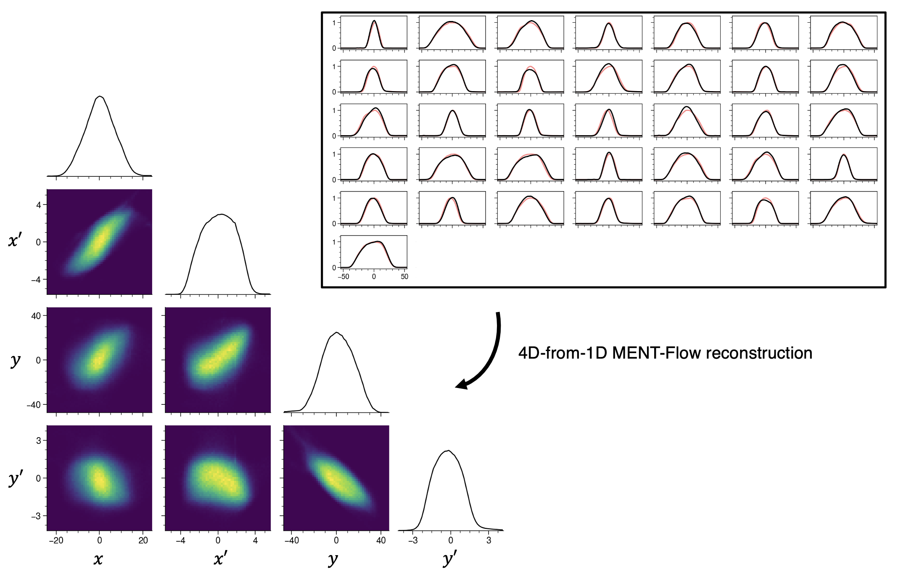

Research
High-power hadron accelerators play pivotal roles in material science, nuclear energy, and particle physics. I study the dynamics of the intense beams produced by these machines. I’m also interested in diagnostic techniques such as phase space tomography. Below are short descriptions of some projections I’ve worked on.
High-dimensional phase space measurements and beam halo formation
Charged particle beams respond to external forces (like magnets) and internal forces (from the beam’s self-generated electric field), also called space charge forces. These combined effects drive some particles to large amplitudes, creating a low-density “halo” surrounding a dense core. Halo is so faint that it barely influences the core and is invisible in typical measurements; however, it places hard constraints on the beam power. Halo particles produce radiation during unintended collisions before reaching their target. The lost beam power must remain below one watt per meter to keep radiation levels safe; this fractional loss corresponds to one out of every million particles in a one-megawatt beam. Current machines operate near the one-part-per-million limit, but losses scale with the intensity. Ten- or hundred-megawatt accelerators may not be possible without halo-level control.
Halo formation is challenging to predict because of its sensitivity to model parameters. In particular, we typically do not know the initial particle distribution in six-dimensional (6D) position-momentum space (phase space). We’re using the Beam Test Facility (BTF) at the Spallation Neutron Source (SNS) to address this problem on a small scale. The BTF is a one-to-one replica of the front end of the SNS linac, equipped to measure the input 6D distribution and the output 2D halo distribution. We are leveraging these unique diagnostics to benchmark PIC simulation codes at a new level of detail and better understand halo formation processes. Fig. 1 shows typical measurement data.

Phase space tomography
Direct 6D phase space distributions take a long time (24 hours) and are only possible at low energies. In other cases, we can only measure projections of the distribution onto position space. For example, we can record the 1D density by scanning a wire across the beam. Performing such measurements at different locations constrains the beam’s phase space distribution. However, it is often the case that more than one distribution is consistent with data. The same inverse problem is encountered in computed tomography (CT). Phase space tomography can be more challenging because the distribution has four or six dimensions while the measurements have one our two. I’m studying methods to improve high-dimensional phase space tomography, particularly maximum-entropy methods.

Phase space painting and beam dynamics in rings
Our primary method to generate intense beams is to repeatedly inject pulses from a linear accelerator (linac) into a circular accelerator (ring). Nonlinear space charge forces drive resonances and collective instabilities in the circulating beam, leading to particle loss. Understanding these effects is an active research area. One approach to mitigate space charge effects is to vary the position and momentum of the injected beam relative to the circulating beam during accumulation. We call this phase space painting. We’re studying a new painting method to generate a vortex beam, where particles swirl inside an elliptical boundary. Such a beam would minimize the nonlinear component of space charge forces, potentially leading to higher intensities. At the same time, the beam would occupy a tiny volume of phase space, making it useful for high-energy colliders.
